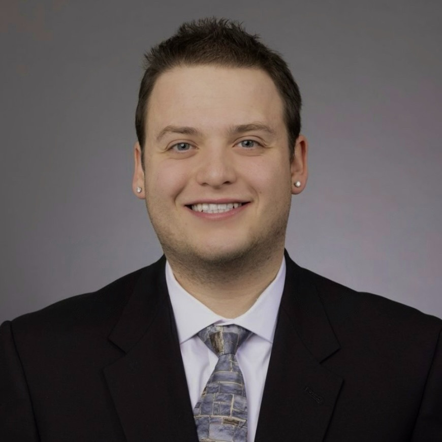
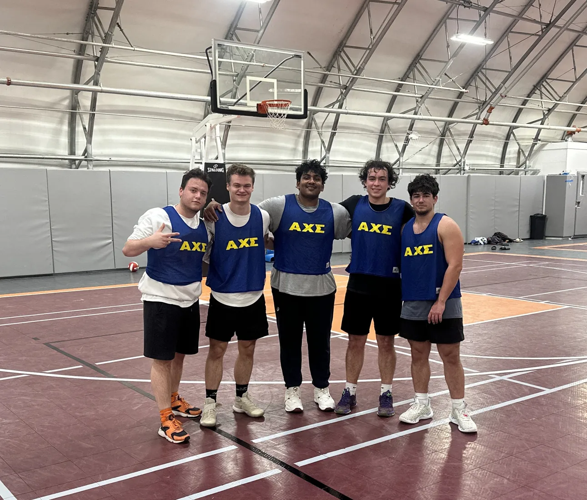
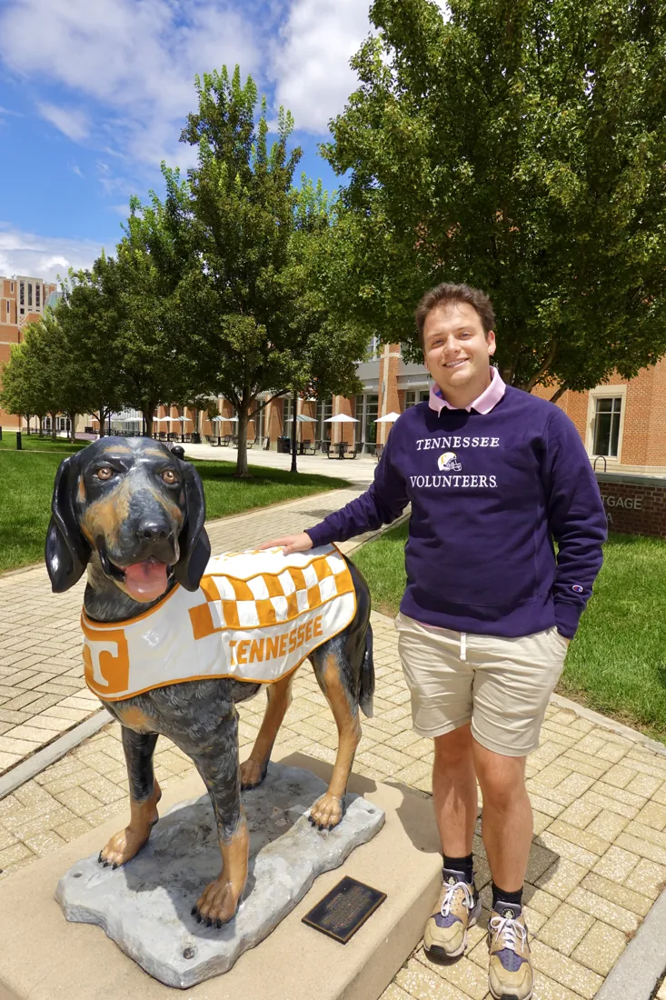

A little beyond the résumé
A lifelong curiosity about what comes next.
I’m an engineer, researcher, proud Hokie, and now a Tennessee Volunteer, driven by a desire to understand the world and help make it better.
My story
“Fusion is the Future.”
My curiosity about nuclear energy began in high school during manufacturing certification courses supported by the National Science Foundation, the University of Virginia, and my local community college.
Our instructor, Mr. Jim Leech, taught Lean manufacturing, Six Sigma, just-in-time production, and Kaizen, but he also challenged us to think about climate change, hunger, affordability, and the world's energy needs as problems worth solving.
He often told me, “Fusion is the Future.” I carried that excitement into my studies at Virginia Tech and now into research at Tennessee, where my current work on uranium chloride molten salts is helping shape a broader interest in advanced fission and fusion systems.

Beyond academics
A little about me
I'm a diehard Virginia Tech sports fan and have attended Hokie football games since I was a newborn. I also enjoy watching basketball and softball, and Tennessee gives me plenty more teams to follow.
I love cooking foods from around the world. Japanese curry, jambalaya, hot pot, gyros, and borscht are favorites, and I’m always searching for something new to make.
Outside, I enjoy nature, swimming, going to the gym, gardening, and caring for my indoor plants. I also recently started a worm bin to compost my food scraps and turn them into something useful for my plants.
I love learning from people with different experiences. Whether you're interested in science, sports, food, or something completely new, I'm always happy to connect.


Service & community
From Ut Prosim to the Volunteer spirit
Graduating from Virginia Tech is a point of tremendous pride for me. Its motto, Ut Prosim, “That I May Serve”, reminds me to use what I have learned to help others. I find a natural continuation of that ideal at the University of Tennessee, where the Volunteer spirit emphasizes contribution to the greater good.
Let’s connect
I'm always interested in a good conversation.
Especially about nuclear energy, research, engineering, and opportunities to collaborate.